PON TU WEB EN ÓRBITA
Inicia sesión en tu Consola de Administración de AWS (AWS Management Console). En el buscador de servicios, escribe "S3" y selecciona el primer resultado. Una vez dentro, haz clic en el botón naranja "Crear bucket" para empezar la configuración.
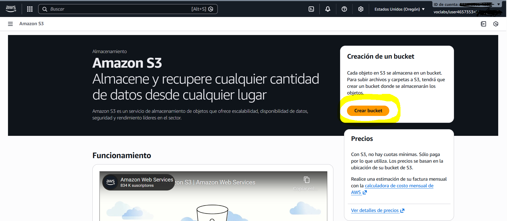Asigna un nombre a tu Bucket (preferiblemente el de tu dominio). Recuerda que debe ser único globalmente y no contener mayúsculas.
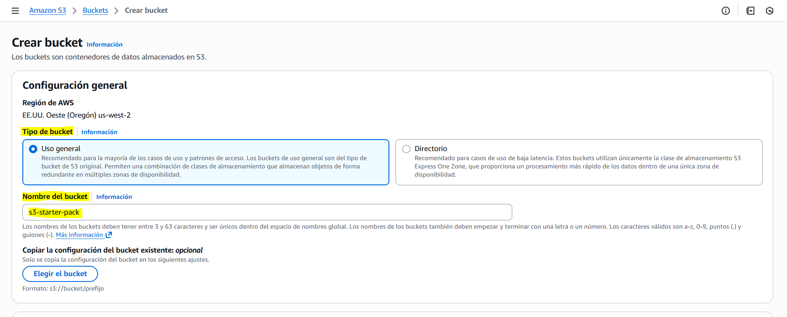Deja el resto de configuraciones predeterminadas y haz clic en el botón naranja "Create bucket" para empezar la configuración.
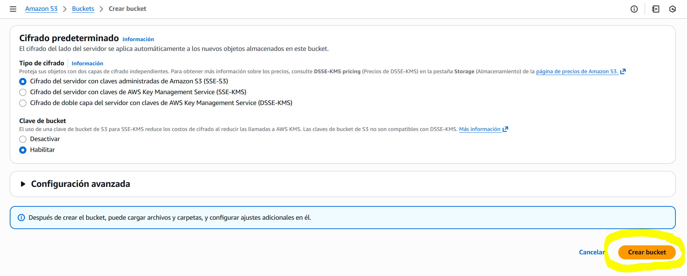Pinchamos sobre nuestro bucket para acceder a la configuración.
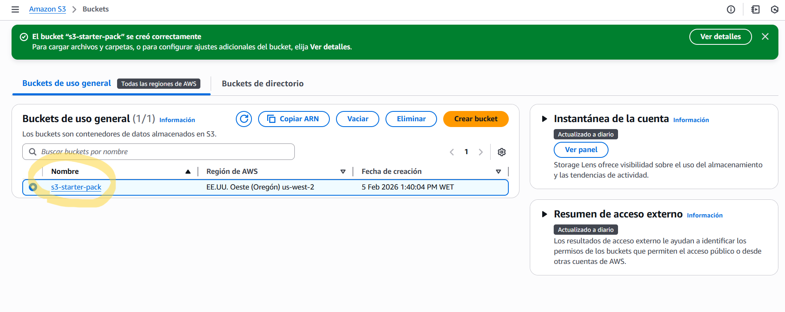Vamos a cargar nuestros archivos pulsando cualquiera de estos dos botones.
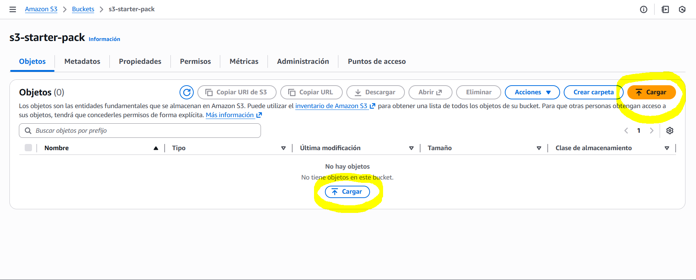Puedes hacerlo o bien por archivos o bien por carpetas. Puedes pulsar sobre los botones o arrastrar la carpeta directamente.
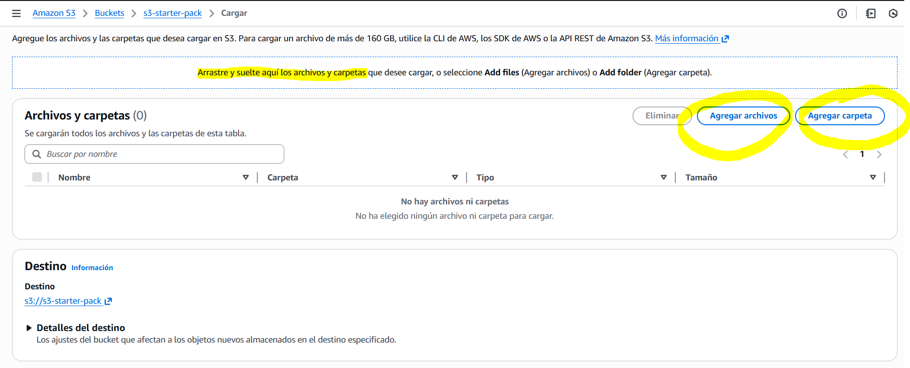En este paso, hemos cargado nuestros archivos
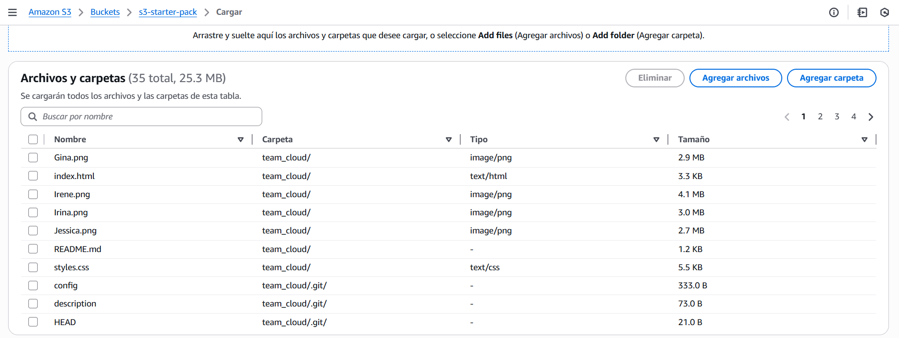Deja el resto de configuraciones de forma predeterminada y pulsa sobre "Cargar"
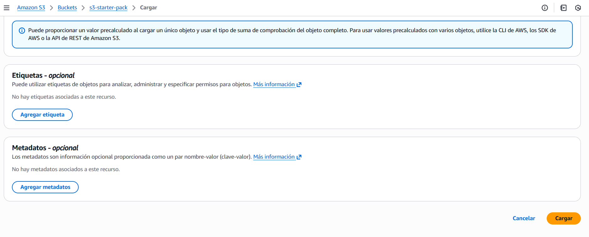Si deseas eliminar algún archivo, puedes seleccionarlo sobre la lista y pulsar sobre el botón de "Eliminar". Deberás confirmar la eliminación escribiendo sobre el campo de texto.
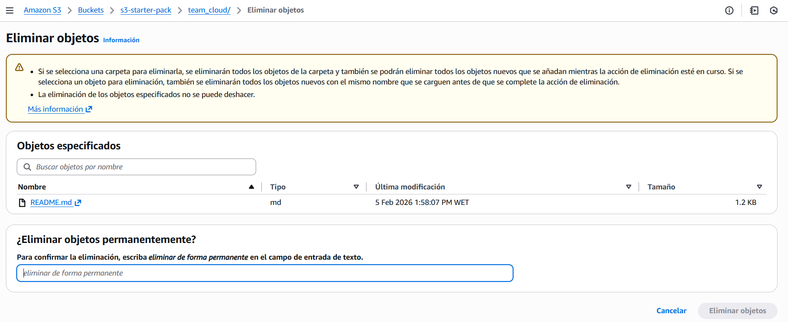Sigue la ruta marcada arriba a la izquierda para volver a la configuración de tu bucket. Con el bucket marcado, ve a la pestaña de "Permisos"
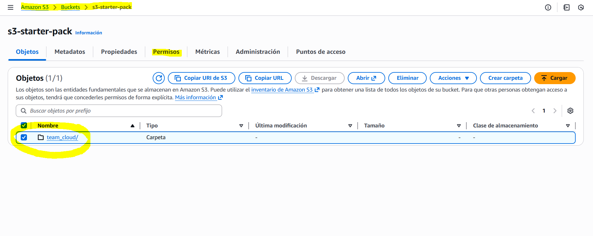En la sección de "Bloquear acceso público" pulsa sobre "Editar".
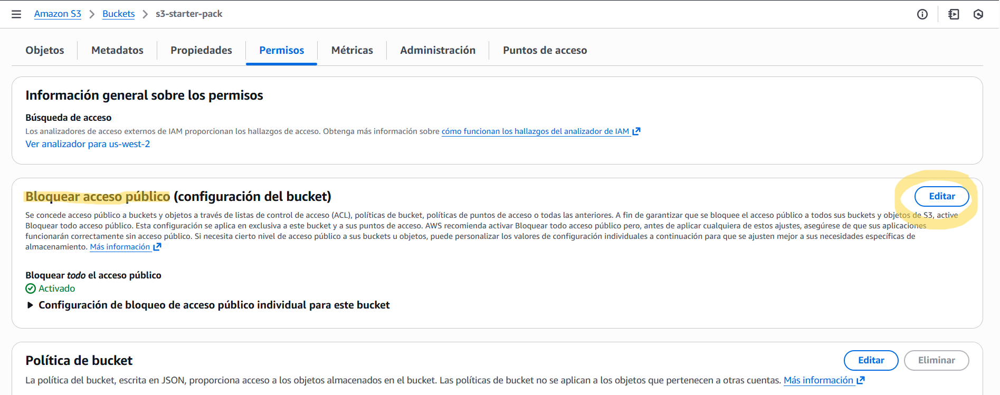En este paso, deselecciona el botón de "Bloquear todo el acceso público" y pincha sobre "Guardar cambios".
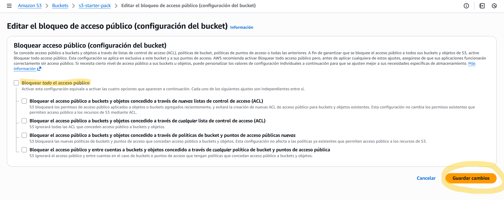En esa misma pestaña de permisos, ahora vamos a editar las "Políticas de bucket"
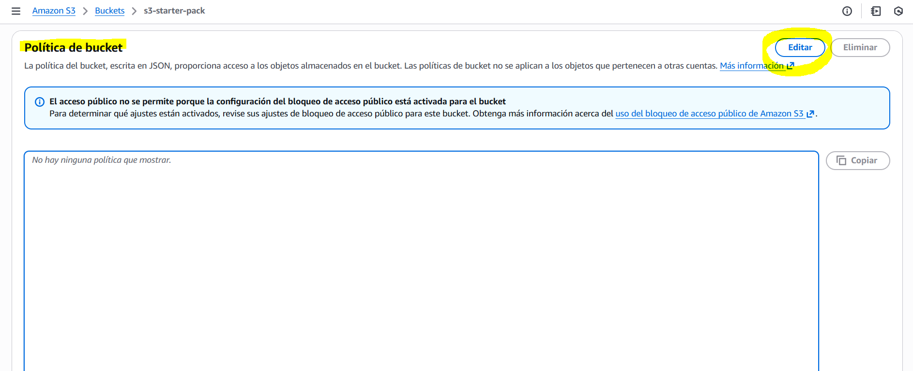Escribe el siguiente script y no olvides poner el nombre de tu bucket en la parte señalada.
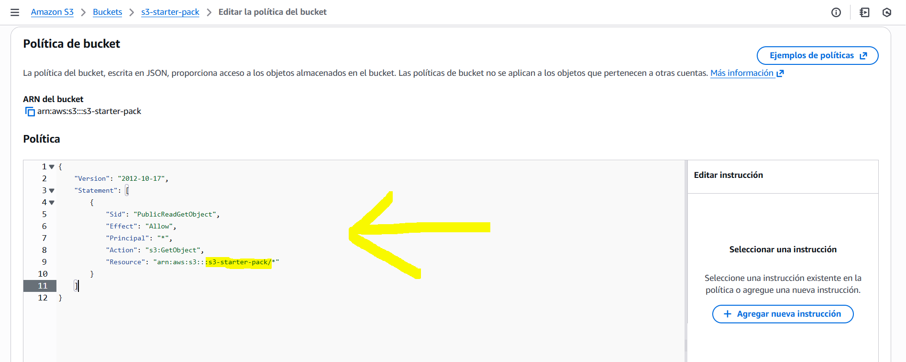Al guardar la política, debe salirte un mensaje como el siguiente:
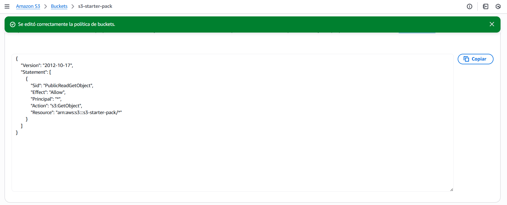En caso de que aparezca algún mensaje de error como el siguiente, revisa si has escrito bien el nombre de tu bucket
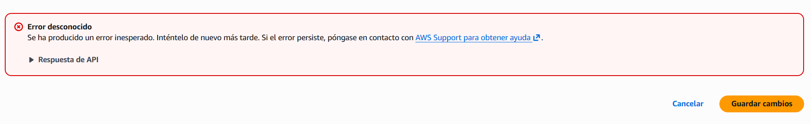Puedes volver a la pestaña de configuración de tu bucket, y ahora pulsaremos sobre "Propiedades".
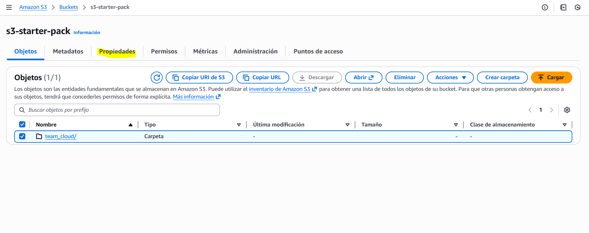Bajaremos hasta casi abajo, a la sección donde pone "Alojamiento de sitios web estáticos" y haremos click sobre "Editar".
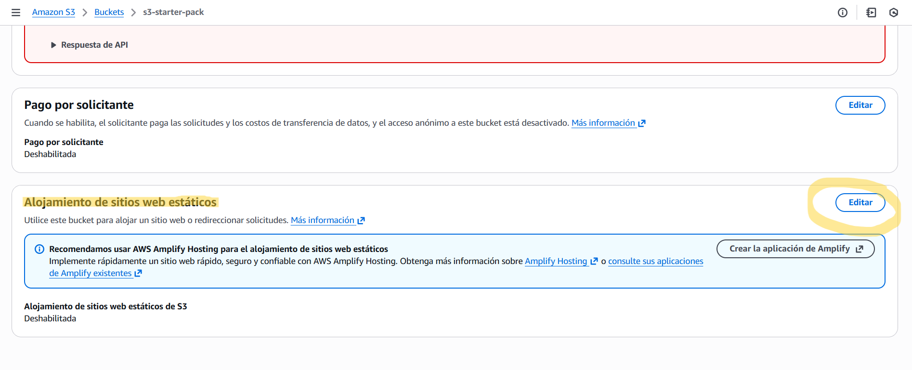Aquí habilitaremos el alojamiento de sitios web estáticos. En tipo de alojamiento lo dejamos como "Alojar un sitio web estático", y en "Dcoumento de índice" seleccionaremos nuestro documento principal. En nuestro caso, al tratarse de una web, le indicaremos el documento de index.html
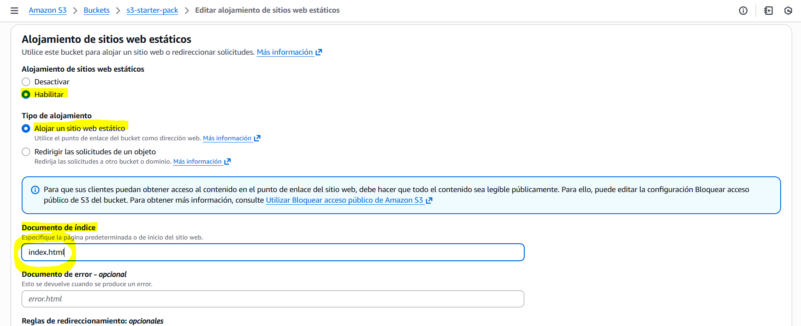Una vez guardado, podemos copiar el punto de enlace de nuestro sitio web
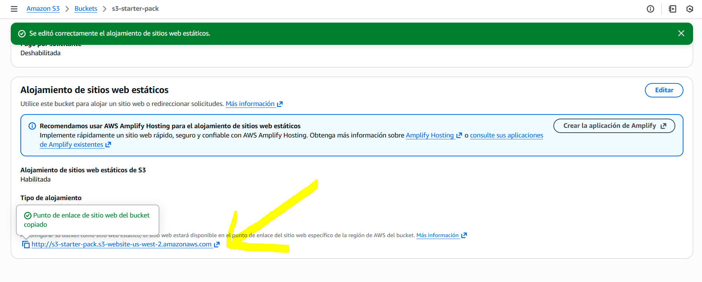¡Felicidades! Abre el enlace en una nueva ventana. Tu web ya está en órbita.
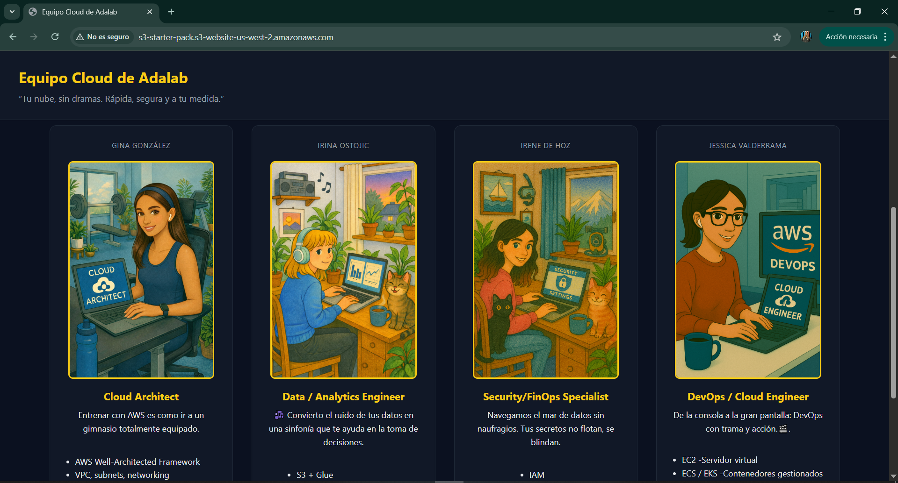